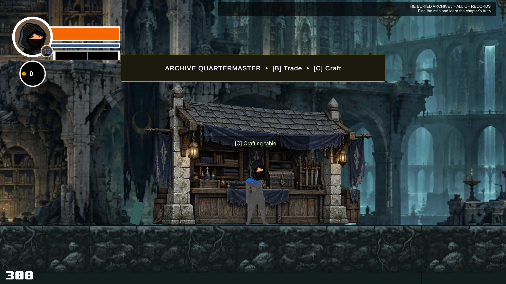
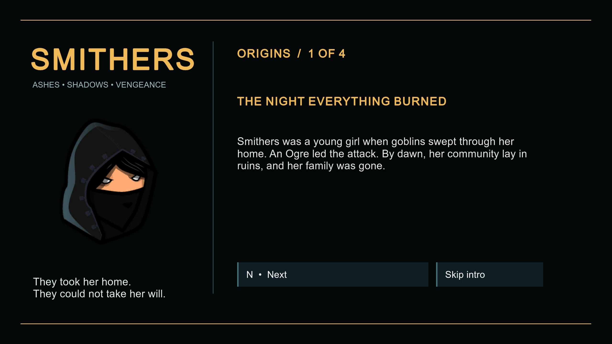
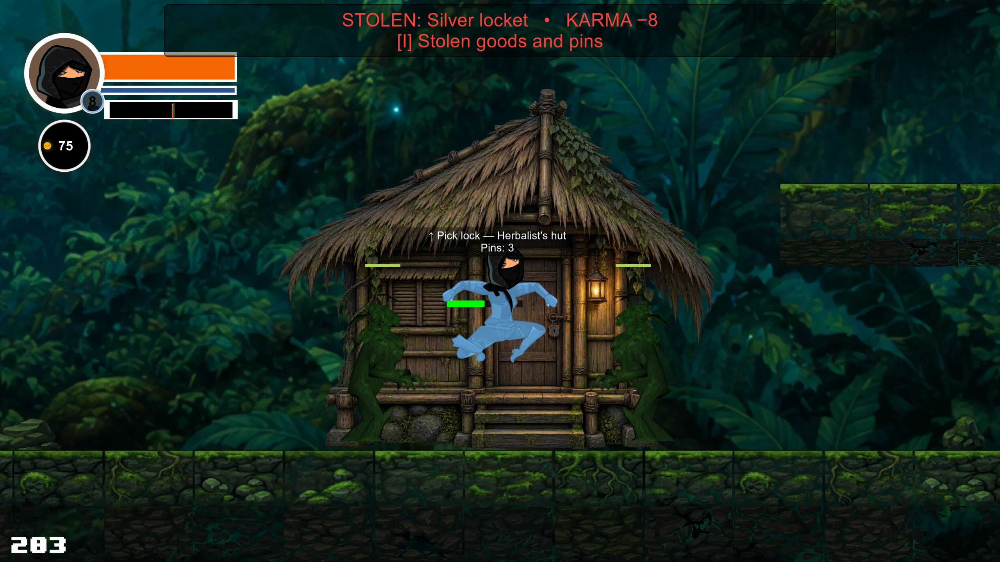
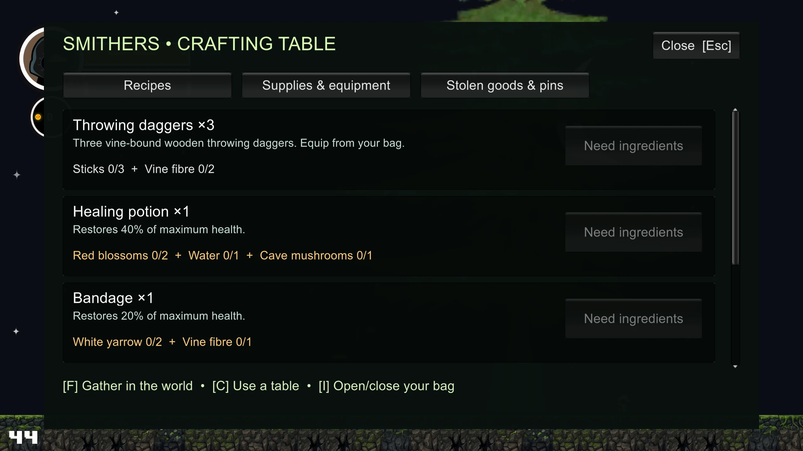
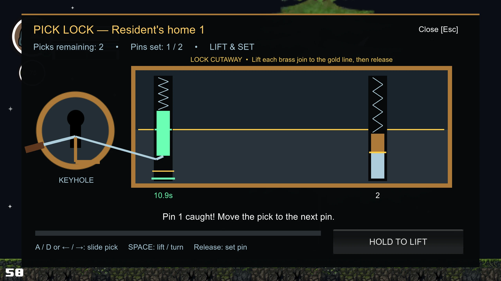
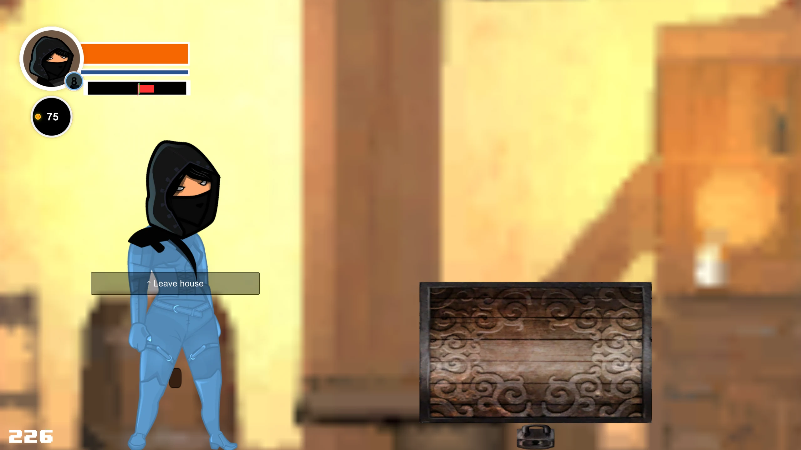
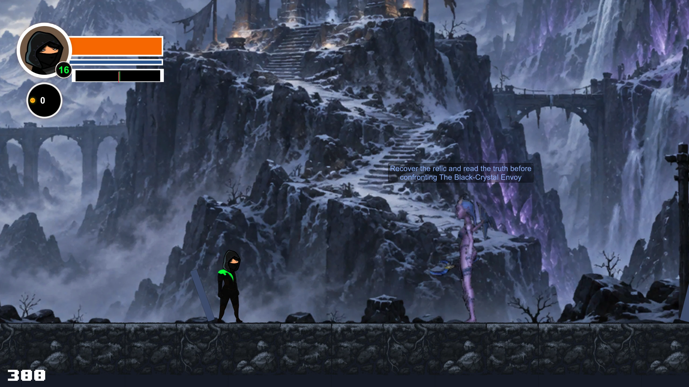

Development journal / First look
Smithers: Karma, crafting and the cost of survival
A young survivor returns to the place where everything was taken from her. Between the sword fights and the search for answers, every stolen treasure and carefully gathered ingredient becomes part of her journey.

Smithers is a side-scrolling fantasy action adventure being built in Unity. You guide a hooded fighter through towns, forests, caves, marshes and ruined strongholds. Combat and platforming move the adventure forward; conversations, discoveries, supplies and reputation give those encounters their context.
The interesting decisions often happen between fights. Do you spend gold on training, gather ingredients for the next stretch, or break into a private home? A useful item can solve an immediate problem while leaving Smithers with a worse reputation when she next needs a merchant.
A survivor looking for the truth
Smithers was a child when goblins, led by an Ogre, destroyed her home and killed her family. She survived on the streets before a blind master took her in and trained her. Now she returns to discover why the attack happened and who stood behind it.
That opening gives her skills a history: a street survivor knows how to get through a locked door; a trained fighter knows how to stand her ground. The player decides how she uses both. Her search gradually connects the ruined community to guardians, ancient seals and a struggle over a much greater gate.

How the adventure works
Explore a chapter, fight its enemies, investigate its story clues and prepare for the major encounter ahead. Sword combat, throwing daggers and smoke bombs sit alongside traversal skills. Character progression runs to level 25; double jump unlocks at character level 3 and hover/glide at level 7.
Easy, Normal and Hell offer increasingly demanding encounters. Replaying chapters retains earned levels, gold, inventory and purchased sword training. Previously claimed discoveries and stolen valuables remain claimed, so replaying does not turn the same chest into an endless reward.
Karma: your choices follow you
Karma runs from −100 to +100, with zero as neutral. Positive Karma appears green; negative Karma appears red. Gathering natural materials has no Karma cost. Stealing a valuable costs 8 Karma. Helpful actions, including lighting lamps and some survivor story interactions, can build it back up.
Reputation changes the economy. Positive Karma gradually discounts shop prices, reaching 25% off at +100. Negative Karma raises prices, and merchants refuse to trade at −50 or below.
A concrete example: from neutral, one theft takes Smithers to −8 Karma. A purchase with a base price of 100 gold now costs 108. Seven thefts without any positive changes take her to −56, beyond the trading cutoff. The treasure has a cost beyond the lock pick.
The system also ties Smithers to the town around her: damage to its buildings can reduce Karma. Death removes positive Karma while leaving negative Karma in place. It does not erase the consequences of theft.

Crafting: turn exploration into supplies
Sticks, vine fibre, pine cones, flowers, cave mushrooms and well water all have a purpose. Press F near a resource to gather it, C beside a crafting table to open recipes, and I to inspect your traveller's bag. Use the Supplies & equipment tab to consume healing items or refill ammunition.
Most gathered resources stay depleted across scene changes; wells refill. Ingredients and finished supplies travel with you between chapters and saved sessions. These are the five recipes in the current build:
3 throwing daggers
3 sticks + 2 vine fibre
Transfer from your bag to refill your dagger ammunition.
Healing potion
2 red blossoms + 1 water + 1 cave mushroom
Restores 40% of maximum health.
Bandage
2 white yarrow + 1 vine fibre
Restores 20% of maximum health.
Smoke bomb
2 pine cones + 1 cave mushroom + 1 vine fibre
Refills the smoke-bomb ability from your bag.
Marsh tonic
2 violet blooms + 1 white yarrow + 1 water
Clears a current slowing effect. New swamp exposure can slow you again.
A cave mushroom could become healing or a smoke bomb. Vine fibre is shared by several recipes. That creates a small preparation puzzle: make what solves the next problem, while keeping enough material for the route beyond it.

Stealing starts with a timed lock
Private homes and jungle huts offer a different kind of challenge. Buy lock picks at a shop, approach a locked entrance and press ↑. The current lock-picking game asks you to set individual pins and finish turning the lock before their timers expire.
- Insert the pick. Hold Space to begin.
- Choose and lift a pin. Use A/D or the left/right arrows, then hold Space.
- Release on the gold line. A correctly set pin starts its own countdown.
- Set the remaining pins and turn. Hold Space to finish opening the lock before a set pin drops.
Too much force can break a pick. A timed-out pin drops without consuming one, but interrupts the turn. Chapter 1 locks have two pins; Chapter 2 locks have three. Later automatic locks become more complex. Press Esc to cancel safely.
Once inside, press T near a valuable to steal it, or leave it alone and exit with ↑. Unlocking a door and taking someone's property are separate actions. The Karma penalty is applied when the valuable is taken.
Current build detail: stolen goods are recorded in the bag with a stated value. They do not automatically become spendable gold, and selling stolen goods is not implemented yet.


One journey, seven chapters
The campaign expands from a personal search into a story about power and responsibility. Its current playable route moves through seven chapters:
- Town, forest and cave. Return to the community, prepare in town and descend toward the Ogre encounter.
- The dark forest and jungle. Follow the trail through a new landscape, with private huts, a market and the serpent encounter.
- The Drowned Marsh. Cross dangerous wetlands, investigate the First Seal and confront Varkesh.
- The Buried Archive. Search the records for the truth about Smithers' family and face the Bound Keeper.
- The Broken Mountain. Climb toward an occupied sanctuary and the Black-Crystal Envoy.
- The Black Citadel. Push through prison approaches and furnace yards toward the Regent of Ash.
- Return to the First Gate. Come back to the ruined home ground for the final confrontation.
Discoveries and conversations matter as well as combat. Later boss encounters require the chapter's discoveries before the confrontation can proceed. Smithers needs to understand what happened as she becomes strong enough to act on it.
Story spoilers: the guardians, the gate and Karma's ending
The archive reveals that Smithers' family and her blind trainer were guardians. The mountain exposes a stolen counterseal and crystal coercion; the citadel reveals the Regent's funding of the campaign to control the greater gate. Those revelations do not excuse Varkesh's responsibility for ordering the massacre.
Smithers returns home to close the gate, choosing guardianship over domination. The current ending text changes with Karma: at +5 or higher, it includes rebuilding and community; below that, redemption begins in greater isolation.

Where Smithers stands today
This is a look at a playable game in development, not a public launch announcement. The seven-chapter route and the systems described here are implemented in the current Unity project. The later chapters are a first playable pass, with further work still needed on art, encounter balance and presentation. Some survivor rescues are currently dialogue interactions rather than escort missions.
The screenshots come from the running game during development checks. Fresh captures of the origin story, crafting, lock-picking and hut sequence were taken on September 17; the two later-chapter views were captured on September 13. Values and presentation may change as the game develops.
What ties the adventure together is the relationship between its systems. Exploring gives Smithers supplies and answers. Crafting gives her ways to survive. Stealing tests what she is prepared to take from others. Karma carries those choices into the next shop—and eventually into the way her story closes.